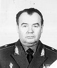

|
 Слипченко Владимир Иванович Родился 03.03.1935 г. в Украине, скоропостижно скончался 5.02.2005г. в Москве. Доктор военных наук, профессор, генерал-майор запаса (1993 г.). Образование - высшее военное. Окончил: Военное училище самоходной артиллерии (1952-1955 г.г.); Высшее инженерное радиотехническое училище Войск ПВО страны (1960-1965 г.г,); адъюнктуру Военной инженерной радиотехнической академии (1967-1970 г.г.); Военную академию Генерального штаба (1989 г.). Является автором 130 научных трудов по проблемам военной науки, стратегии, оперативного искусства и тактики. Один из ведущих в России специалистов в области теории вооруженной борьбы. Выполнил ряд важных исследований по вооруженной борьбе будущего на земле в воздухе и космосе. Создал эффективную школу подготовки военных ученых при Центре военно-стратегических исследований Генерального штаба, Лично подготовил 21 кандидата и 7 докторов военных наук по проблемам военного искусства. Был членом докторского специализированного совета по военным наукам в Генеральном штабе. Общий стаж научно-педагогической деятельности свыше 20 лет, из которых 8 лет служил в Генеральном штабе и более 12 лет в военных академиях. Как военный ученый многократно принимал участие в различных конференциях в своей стране и за рубежом. Работал в Генеральном штабе ВС РФ. Был вице-президентом Академии военных наук. Жена Лидия (1938 г. рождения), сын Вячеслав (1968 г.р.), дочь Оксана (1974 г.р.). |